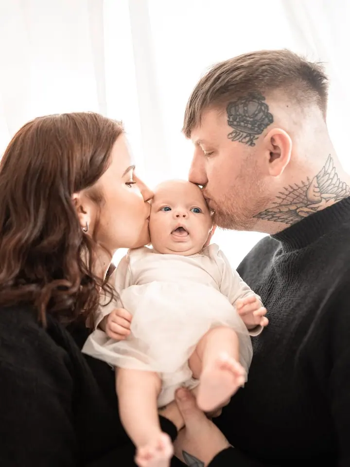
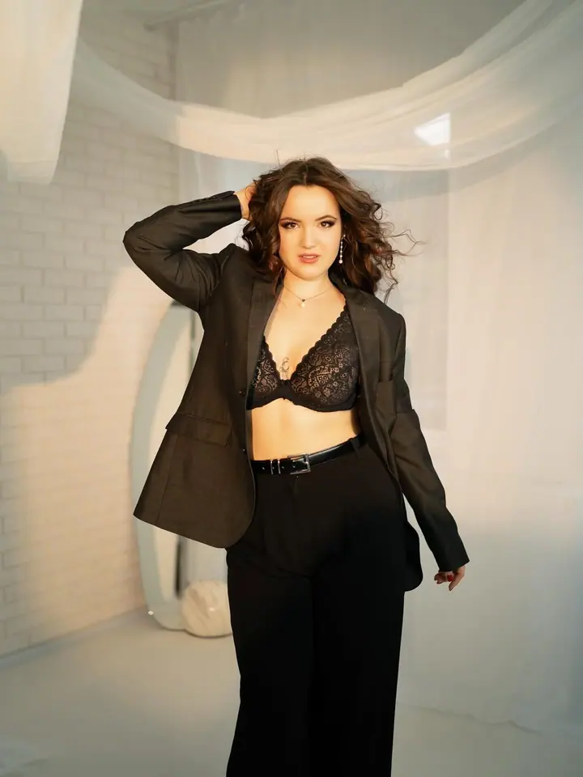

Newborn focení
Klidné focení miminka v prvních týdnech, v náručí rodičů nebo samotného v měkkých bílých látkách. Tempo určuje miminko, ne fotoaparát.

Jmenuji se Lucie Horáková a fotím miminka, rodiny a portréty. Nejraději mám focení, kde se nikdo nemusí snažit a fotky vzniknou samy z toho, jak se máte rádi.
Rezervovat termínJmenuji se Lucie a jsem fotografka. Fotím newborn, rodiny, portréty i svatby, v ateliéru se světlým bílým prostředím i venku v přírodě.

Na focení mi nejvíc záleží na klidu. U miminek se přizpůsobím jejich rytmu, u rodin a portrétů vám pomohu s pózováním, ale nechávám prostor i pro chvíle, které nejde naplánovat.
Výsledkem mají být fotky, ke kterým se budete vracet i za mnoho let. Jemné, světlé a hlavně pravdivé.
Co fotím
Klidné focení miminka v prvních týdnech, v náručí rodičů nebo samotného v měkkých bílých látkách. Tempo určuje miminko, ne fotoaparát.
Focení rodičů s dětmi v ateliéru i venku, včetně sezónních vánočních scén. Hlavní je, abyste byli spolu a uvolnění.
Portréty v ateliéru i v přírodě, ve světle zapadajícího slunce. Ráda vám pomohu s pózováním, abyste se před fotoaparátem cítili přirozeně.
Svatební den a novomanželské focení v teplých, jemných tónech. Fotím tak, abyste si den mohli v klidu užít.
Postup
Napište mi přes formulář, e-mailem nebo na Instagramu, o jaké focení máte zájem a kdy by se vám hodilo.
Společně vybereme místo, ateliér nebo venkovní lokalitu, a probereme oblečení i to, co od fotek čekáte.
Fotíme v klidu a bez spěchu. U miminek a malých dětí počítám s pauzami na krmení i mazlení.
Fotky pečlivě vyberu a upravím a pošlu vám je v online galerii.
Otázky
Ideálně v prvních týdnech po narození, kdy miminko hodně spí. Termín je dobré předběžně domluvit už během těhotenství a upřesnit po porodu.
Obojí. Ateliér je ideální pro miminka a zimní focení, venku fotím hlavně rodiny a portréty v teplém světle.
Doporučuji jednoduché oblečení v jemných, sladěných barvách bez velkých nápisů. Ráda vám s výběrem poradím předem.
Stačí vyplnit krátký formulář na webu nebo mi napsat e-mail. Ozvu se vám a domluvíme termín.